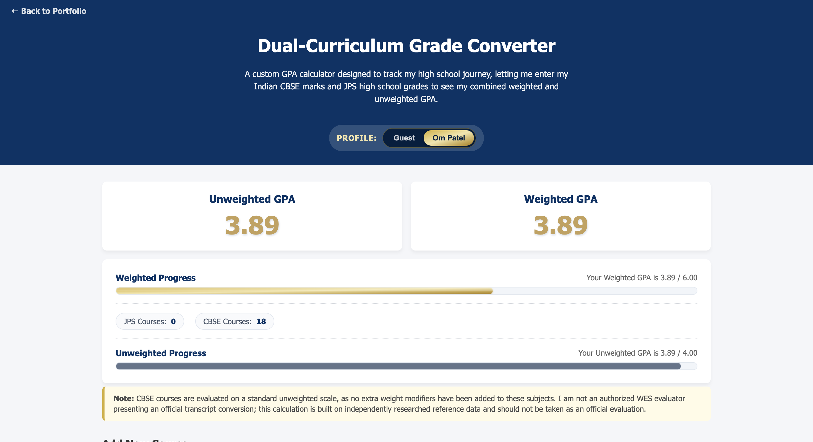
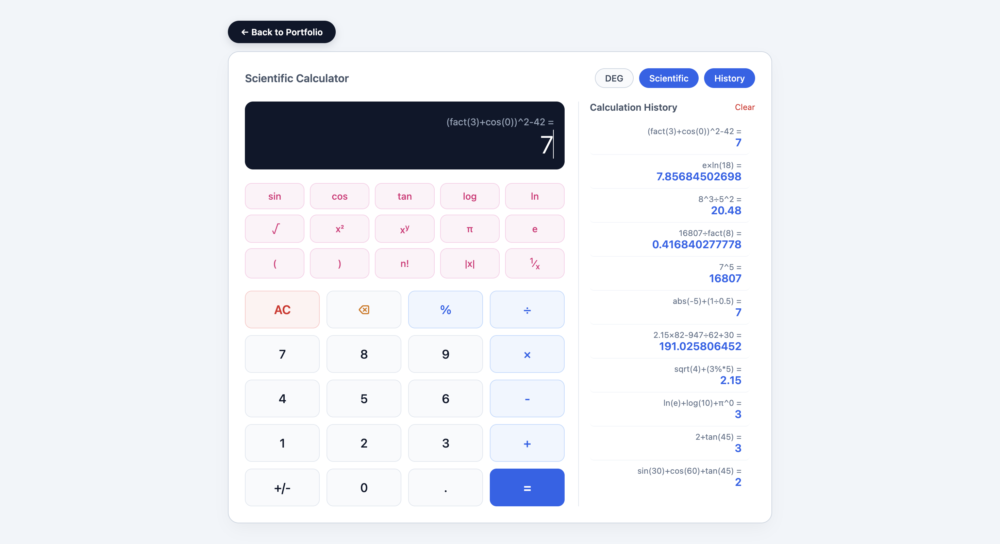

Projects
Note: Following my U.S. relocation on May 22, 2026, I turned my passion for coding into real projects. Starting in June with basic HTML/CSS knowledge, I spent my summer vacation teaching myself JavaScript, concepts, and algorithms through YouTube tutorials and online tools on my dad's laptop. Once school started, I navigated restrictions on my school-issued MacBook by coding on StackBlitz during study halls and free time, then transferred my files to my dad's laptop to publish on GitHub. Each project here reflects my continuous self-learning, effort, and authentic drive for Computer Science.

Dual Curriculum Grade Converter
A web utility designed to convert Indian CBSE percentage marks into equivalent US GPA grades. Built to solve a real problem during my relocation. By researched WES metrics featuring original conversion algorithms with vast list of courses

Scientific Web Calculator
An interactive web application supporting trigonometric, logarithmic, and algebraic functions. Built to demonstrate clean DOM manipulation, custom event handling, and algorithmic precision in JavaScript.

STEM & Physics Formula Solver
A Python desktop GUI application built using Object-Oriented Programming (OOP) and Tkinter. Automates CBSE Class 11/12 Physics formulas and mathematical formulas. Built to demonstrate my python knowledge from Indian background.